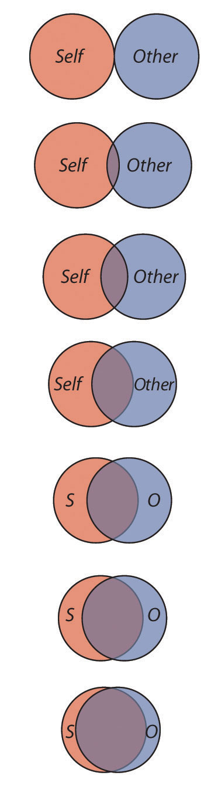
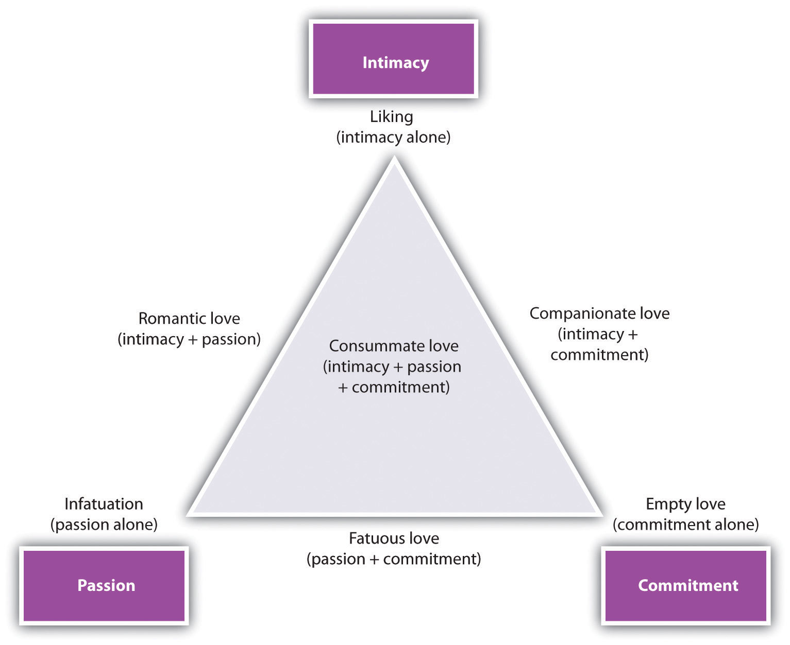
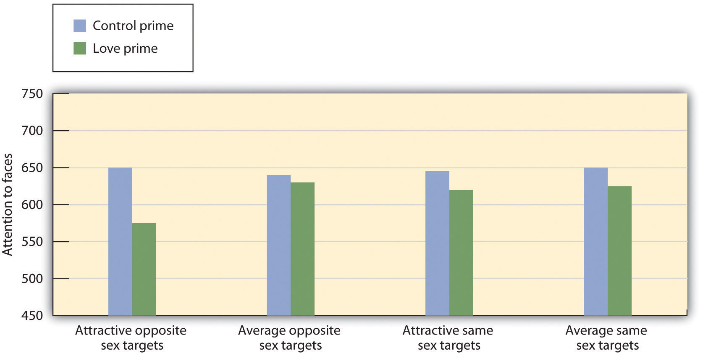

To this point in the chapter, we have focused upon the attraction that occurs between people who are initially getting to know one another. But the basic principles of social psychology can also be applied to help us understand relationships that last longer. When good friendships develop, when people get married and plan to spend the rest of their lives together, and when families grow closer over time, the relationships take on new dimensions and must be understood in somewhat different ways. Yet the principles of social psychology can still be applied to help us understand what makes these relationships last. Although humans seem to be the only animals that are able to develop close relationships in which partners stay sexually faithful to each other for a lifetime (Barash & Lipton, 2002),Barash, D. P., & Lipton, J. E. (2002). Gender gap: The biology of male-female differences. Piscataway, NJ: Transaction Publishers. Retrieved from http://search.ebscohost.com/login.aspx?direct=true&db=psyh&AN=2002-17744-000&site=ehost-live these relationships do not come easily. About one half of contemporary marriages in the United States and Canada end in divorce (CDC, 2010).Centers for Disease Control and Prevention. Marriage and divorce. Retrieved from http://www.cdc.gov/nchs/fastats/divorce.htm
The factors that keep people liking each other in long-term relationships are at least in part the same as the factors that lead to initial attraction. For instance, regardless of how long they have been together, people remain interested in the physical attractiveness of their partners, although it is relatively less important than for initial encounters. And similarity remains essential. Relationships are also more satisfactory and more likely to continue when the individuals develop and maintain similar interests and continue to share their important values and beliefs over time (Davis & Rusbult, 2001).Davis, J. L., & Rusbult, C. E. (2001). Attitude alignment in close relationships. Journal of Personality and Social Psychology, 81(1), 65–84. Proximity also remains important—relationships that undergo the strain of the partners’ being apart from each other for very long are more at risk for breakup.
But what about passion? Does it still matter over time? Yes and no. People in long-term relationships who are most satisfied with their partners report that they still feel passion for their partners—they still want to be around them as much as possible, and they enjoy making love with them (Simpson, 1987; Sprecher, 2006).Simpson, J. A. (1987). The dissolution of romantic relationships: Factors involved in relationship stability and emotional distress. Journal of Personality and Social Psychology, 53(4), 683–692; Sprecher, S. (2006). Sexuality in close relationships. In P. Noller & J. A. Feeney (Eds.), Close relationships: Functions, forms and processes (pp. 267–284). Hove, England: Psychology Press/Taylor & Francis (UK). And partners report that the more they love their partners, the more attractive they find them (Simpson, Gangestad, & Lerma, 1990).Simpson, J. A., Gangestad, S. W., & Lerma, M. (1990). Perception of physical attractiveness: Mechanisms involved in the maintenance of romantic relationships. Journal of Personality and Social Psychology, 59(6), 1192–1201. On the other hand, the high levels of passionate love that are experienced in initial encounters are not likely to be maintained throughout the course of a long-term relationship (Acker & Davis, 1992).Acker, M., & Davis, M. H. (1992). Intimacy, passion and commitment in adult romantic relationships: A test of the triangular theory of love. Journal of Social and Personal Relationships, 9(1), 21–50. Over time, cognition becomes relatively more important than emotion, and close relationships are more likely to be based on companionate loveLove that is based on friendship, mutual attraction, common interests, mutual respect, and concern for each other’s welfare., defined as love that is based on friendship, mutual attraction, common interests, mutual respect, and concern for each other’s welfare. This does not mean that enduring love is less strong—it just has a different underlying structure than initial love.
Although it is safe to say that many of the variables that influence initial attraction remain important in longer-term relationships, other variables also come into play over time. One important change is that as a relationship progresses, the partners come to know each other more fully and care about each other to a greater degree. In successful relationships, the partners feel increasingly close to each other over time, whereas in unsuccessful relationships, closeness does not increase and may even decrease. The closeness experienced in these relationships is marked in part by reciprocal self-disclosureThe tendency to communicate frequently, without fear of reprisal, and in an accepting and empathetic manner.—the tendency to communicate frequently, without fear of reprisal, and in an accepting and empathetic manner.
When the partners in a relationship feel that they are close, and when they indicate that the relationship is based on caring, warmth, acceptance, and social support, we can say that the relationship is intimate (Sternberg, 1986).Sternberg, R. (1986). A triangular theory of love. Psychological Review, 93, 119–135. Partners in intimate relationships are likely to think of the couple as “we” rather than as two separate individuals. People who have a sense of closeness with their partner are better able to maintain positive feelings about the relationship while at the same time being able to express negative feelings and to have accurate (although sometimes less than positive) judgments of the other (Neff & Karney, 2002).Neff, L. A., & Karney, B. R. (2002). Self-evaluation motives in close relationships: A model of global enhancement and specific verification. In P. Noller & J. A. Feeney (Eds.), Understanding marriage: Developments in the study of couple interaction (pp. 32–58). New York, NY: Cambridge University Press. People may also use their close partner’s positive characteristics to feel better about themselves (Lockwood, Dolderman, Sadler, & Gerchak, 2004).Lockwood, P., Dolderman, D., Sadler, P., & Gerchak, E. (2004). Feeling better about doing worse: Social comparisons within romantic relationships. Journal of Personality and Social Psychology, 87(1), 80–95.
Arthur Aron and his colleagues (Aron, Aron, & Smollan, 1992)Aron, A., Aron, E. N., & Smollan, D. (1992). Inclusion of other in the self scale and the structure of interpersonal closeness. Journal of Personality and Social Psychology, 63(4), 596–612. have assessed the role of closeness in relationships directly, using the simple measure shown in Figure 8.6 "Measuring Relationship Closeness". You might try completing the measure yourself for some different people that you know—for instance, your family members, your friends, your spouse, or your girlfriend or boyfriend. The measure is simple to use and to interpret. If a person chooses a circle that represents the self and the other as more overlapping, this means that the relationship is close. But if they choose a circle that is less overlapping, then the relationship is less so.
Figure 8.6 Measuring Relationship Closeness
This measure is used to determine how close two partners feel to each other. The respondent simply circles which of the figures he or she feels characterizes the relationship. From Aron, Aron, and Smollan (1992).Aron, A., Aron, E. N., & Smollan, D. (1992). Inclusion of other in the self scale and the structure of interpersonal closeness. Journal of Personality and Social Psychology, 63(4), 596–612.
Although the closeness measure is simple, it has been found to be highly predictive of people’s satisfaction with their close relationships and of the tendency for couples to stay together. In fact, the perceived closeness between romantic partners can be a better predictor of how long a relationship will last than is the number of positive feelings that the partners indicate having for each other. In successful close relationships cognitive representations of the self and the other tend to merge together into one, and it is this tie—based on acceptance, caring, and social support—that is so important (Aron, Aron, Tudor, & Nelson, 1991).Aron, A., Aron, E. N., Tudor, M., & Nelson, G. (1991). Close relationships as including other in the self. Journal of Personality and Social Psychology, 60(2), 241–253.
Aron and his colleagues (Aron, Melinat, Aron, & Vallone, 1997)Aron, A., Melinat, E., Aron, E. N., & Vallone, R. D. (1997). The experimental generation of interpersonal closeness: A procedure and some preliminary findings. Personality and Social Psychology Bulletin, 23(4), 363–377. used an experimental design to test whether self-disclosure of intimate thoughts to others would increase closeness. In a laboratory, they paired college students with another student, one whom they did not know. Some of the students were asked to share some intimate thoughts with each other by asking and answering questions such as “When did you last cry in front of another person?” In comparison with control participants who only engaged in small talk with their partners (answering questions such as “What is your favorite holiday?”), the students who disclosed more intimate experiences reported feeling significantly closer to each other at the end of the conversation.
In intimate close relationships, the partners can become highly attuned to each other’s needs, such that the desires and goals of the other become as important as, or more important than, one’s own needs. When people are attentive to the needs of others—for instance, parents’ attentiveness to the needs of their children or the attentiveness of partners in a romantic relationship—and when they help the other person meet his or her needs without explicitly keeping track of what they are giving or expecting to get in return, we say that the partners have a communal relationship. Communal relationshipsA close relationship in which partners suspend their need for equity and exchange, giving themselves to the partner in order to meet his or her needs, and without consideration of the costs to themselves. are close relationships in which partners suspend their need for equity and exchange, giving support to the partner in order to meet his or her needs, and without consideration of the costs to themselves. Communal relationships are contrasted with exchange relationshipsA relationship in which each of the partners keeps track of his or her contributions to the partnership., relationships in which each of the partners keeps track of his or her contributions to the partnership.
Suggesting that communal relationships can be beneficial, research has found that happier couples are less likely to “keep score” of their respective contributions (Buunk, Van Yperen, Taylor, & Collins, 1991).Buunk, B. P., Van Yperen, N. W., Taylor, S. E., & Collins, R. L. (1991). Social comparison and the drive upward revisited: Affiliation as a response to marital stress. European Journal of Social Psychology, 21(6), 529–546. And when people are reminded of the external benefits that their partners provide them, they may experience decreased feelings of love for them (Seligman, Fazio, & Zanna, 1980).Seligman, C., Fazio, R. H., & Zanna, M. P. (1980). Effects of salience of extrinsic rewards on liking and loving. Journal of Personality and Social Psychology, 38(3), 453–460.
Although partners in long-term relationships are frequently willing and ready to help each other meet their needs, and although they will in some cases forgo the need for exchange and reciprocity, this does not mean that they always or continually give to the relationship without expecting anything in return. Partners do keep track of their contributions and received benefits. If one or both of the partners feel that they are unfairly contributing more than their fair share, and if this inequity continues over a period of time, the relationship will suffer. Partners who feel that they are contributing more will naturally become upset because they will feel that they are being taken advantage of. But the partners who feel that they are receiving more than they deserve might feel guilty about their lack of contribution to the partnership.
Members of long-term relationships focus to a large extent on maintaining equity, and marriages are happiest when both members perceive that they contribute relatively equally (Van Yperen & Buunk, 1990).Van Yperen, N. W., & Buunk, B. P. (1990). A longitudinal study of equity and satisfaction in intimate relationships. European Journal of Social Psychology, 20(4), 287–309. People stay in relationships longer when they feel that they are being rewarded by them (Margolin & Wampold, 1981).Margolin, G., & Wampold, B. E. (1981). Sequential analysis of conflict and accord in distressed and nondistressed marital partners. Journal of Consulting and Clinical Psychology, 49(4), 554–567. In short, in relationships that last, the partners are aware of the needs of the other person and attempt to meet them equitably. But partners in the best relationships are also able to look beyond the rewards themselves and to think of the relationship in a communal way.
Another factor that makes long-term relationships different from short-term ones is that they are more complex. When a couple begins to take care of a household together, has children, and perhaps has to care for elderly parents, the requirements of the relationship become correspondingly bigger. As a result of this complexity, the partners in close relationships increasingly turn to each other not only for social support but also for help in coordinating activities, remembering dates and appointments, and accomplishing tasks (Wegner, Erber, & Raymond, 1991).Wegner, D. M., Erber, R., & Raymond, P. (1991). Transactive memory in close relationships. Journal of Personality and Social Psychology, 61(6), 923–929. The members of a close relationship are highly interdependentIn a close relationship, relying to a great degree on each other to meet goals., relying to a great degree on each other to meet their goals.
It takes a long time for partners in a relationship to develop the ability to understand the other person’s needs and to form positive patterns of interdependence in which each person’s needs are adequately met. The social representation of a significant other is a rich, complex, and detailed one because we know and care so much about him or her and because we have spent so much time in his or her company (Andersen & Cole, 1990).Andersen, S. M., & Cole, S. W. (1990). “Do I know you?” The role of significant others in general social perception. Journal of Personality and Social Psychology, 59(3), 384–399. Because a lot of energy has been invested in creating the relationship, particularly when the relationship includes children, breaking off the partnership becomes more and more costly with time. After spending a long time with one person, it may also become more and more difficult to imagine ourselves with anyone else.
In relationships in which a positive rapport between the partners is developed and maintained over a period of time, the partners are naturally happy with the relationship and they become committed to it. CommitmentThe feelings and actions that keep partners working together to maintain the relationship. refers to the feelings and actions that keep partners working together to maintain the relationship. In comparison to those who are less committed, partners who are more committed to the relationship see their mates as more attractive than others, are less able to imagine themselves with another partner, express less interest in other potential mates, are less aggressive toward each other, and are less likely to break up (Simpson, 1987; Slotter et al., 2011).Slotter, B., Finkel, E. J., DeWall, C. N., Pond, R. S., Jr., Lambert, N. M., Bodenhausen, G. V., & Fincham, F. D. (2011, August 8). Putting the brakes on aggression toward a romantic partner: The inhibitory influence of relationship commitment. Journal of Personality and Social Psychology (in press); Simpson, J. A. (1987). The dissolution of romantic relationships: Factors involved in relationship stability and emotional distress. Journal of Personality and Social Psychology, 53(4), 683–692.
Commitment may in some cases lead individuals to stay in relationships that they could leave, even though the costs of remaining in the relationship are very high. On the surface, this seems puzzling because people are expected to attempt to maximize their rewards in relationships and would be expected to leave them if they are not rewarding. But in addition to evaluating the outcomes that one gains from a given relationship, the individual also evaluates the potential costs of moving to another relationship or not having any relationship at all. We might stay in a romantic relationship, even if the benefits of that relationship are not high, because the costs of being in no relationship at all are perceived as even higher. In short, when considering whether to stay or leave, we must consider both the costs and benefits of the current relationship and the costs and benefits of the alternatives to it (Rusbult, Olsen, Davis, & Hannon, 2001).Rusbult, C. E., Olsen, N., Davis, J. L., & Hannon, P. A. (2001). Commitment and relationship maintenance mechanisms. In J. Harvey & A. Wenzel (Eds.), Close romantic relationships: Maintenance and enhancement (pp. 87–113). Mahwah, NJ: Lawrence Erlbaum.
Although the good news about interdependence and commitment is clear—they help relationships last longer—they also have a potential downside. Breaking up, should it happen, is more difficult in relationships that are interdependent and committed. The closer and more committed a relationship has been, the more devastating a breakup will be.
Although we have talked about it indirectly, we have not yet tried to define love itself—and yet it is obviously the case that close relationships are all about love. Social psychologists have studied the function and characteristics of romantic love, finding that it has cognitive, affective, and behavioral components and that it occurs cross-culturally. Romantic love is found in all cultures, although how it is experienced may vary.
Robert Sternberg and others (Arriaga & Agnew, 2001; Sternberg, 1986)Arriaga, X. B., & Agnew, C. R. (2001). Being committed: Affective, cognitive, and conative components of relationship commitment. Personality and Social Psychology Bulletin, 27(9), 1190–1203; Sternberg, R. (1986). A triangular theory of love. Psychological Review, 93, 119–135. have proposed a triangular model of loveAn approach to defining love that is based on combinations of passion, intimacy, and commitment., an approach that suggests that there are different types of love and that each is made up of different combinations of cognitive and affective variables, specified in terms of passion, intimacy, and commitment. The model, shown in Figure 8.7 "Triangular Model of Love", suggests that only consummate love has all three of the components (and is probably experienced only in the very best romantic relationships), whereas the other types of love are made up of only one or two of the three components. For instance, people who are good friends may have liking (intimacy) only or may have known each other so long that they also share commitment to each other (companionate love). Similarly, partners who are initially dating might simply be infatuated with each other (passion only) or may be experiencing romantic love (both passion and liking but not commitment).
Figure 8.7 Triangular Model of Love
The triangular model of love, proposed by Robert Sternberg. Note that there are seven types of love, which are defined by the combinations of the underlying factors of intimacy, passion, and commitment. From Sternberg (1986).Sternberg, R. (1986). A triangular theory of love. Psychological Review, 93, 119–135.
Romantic Love Reduces Our Attention to Attractive Others
Evolutionary psychologists have proposed that we experience romantic love to help increase our evolutionary fitness (Taylor & Gonzaga, 2006).Taylor, S. E., & Gonzaga, G. C. (2006). Evolution, relationships, and health: The social shaping hypothesis. In M. Schaller, J. A. Simpson, & D. T. Kenrick (Eds.), Evolution and social psychology (pp. 211–236). Madison, CT: Psychosocial Press. According to this idea, love helps couples work together to improve the relationship by coordinating and planning activities and by increasing commitment to the partnership. If love acts as a “commitment device,” it may do so in part by helping people avoid being attracted to other people who may pose a threat to the stability of the relationship (Gonzaga, Haselton, Smurda, Davies, & Poore, 2008; Sabini & Silver, 2005).Gonzaga, G. C., Haselton, M. G., Smurda, J., Davies, M. S., & Poore, J. C. (2008). Love, desire, and the suppression of thoughts of romantic alternatives. Evolution and Human Behavior, 29(2), 119–126; Sabini, J., & Silver, M. (2005). Gender and jealousy: Stories of infidelity. Cognition and Emotion, 19(5), 713–727.
Jon Maner and his colleagues (Maner, Rouby, & Gonzaga, 2008)Maner, J. K., Rouby, D. A., & Gonzaga, G. C. (2008). Automatic inattention to attractive alternatives: The evolved psychology of relationship maintenance. Evolution and Human Behavior, 29(5), 343–349. tested this idea by selecting a sample of participants who were currently in a committed relationship and manipulating the extent to which the participants were currently experiencing romantic love for their partners. They predicted that the romantic love manipulation would decrease attention to faces of attractive opposite-sex people.
One half of the participants (the romantic love condition) were assigned to write a brief essay about a time in which they experienced strong feelings of love for their current partner. Participants assigned to the control condition wrote a brief essay about a time in which they felt extremely happy. After completing the essay, participants completed a procedure in which they were shown a series of attractive and unattractive male and female faces. The procedure assessed how quickly the participants could shift their attention away from the photo they were looking at to a different photo. The dependent variable was the reaction time (in milliseconds) with which participants could shift their attention.
Figure 8.8 Romantic Love and Attention to Faces
Activating thoughts and feelings of romantic love reduced attention to faces of attractive alternatives. Attention to other social targets remained unaffected. Data are from Maner et al. (2008).Maner, J. K., Rouby, D. A., & Gonzaga, G. C. (2008). Automatic inattention to attractive alternatives: The evolved psychology of relationship maintenance. Evolution and Human Behavior, 29(5), 343–349.
As you can see in the preceding figure, the participants who had been asked to think about their thoughts and feelings of love for their partner were faster at moving their attention from the attractive opposite-sex photos than were participants in any of the other conditions. When experiencing feelings of romantic love, participants’ attention seemed repelled, rather than captured, by highly attractive members of the opposite sex. These findings suggest that romantic love may inhibit the perceptual processing of physical attractiveness cues—the very same cues that often pose a high degree of threat to the relationship.
One of the important determinants of the quality of close relationships is the way that the partners relate to each other. These approaches can be described in terms of attachment styleIndividual differences in how people relate to others in close relationships.—individual differences in how people relate to others in close relationships. We display our attachment styles when we interact with our parents, our friends, and our romantic partners (Eastwick & Finkel, 2008).Eastwick, P. W., & Finkel, E. J. (2008). The attachment system in fledgling relationships: An activating role for attachment anxiety. Journal of Personality and Social Psychology, 95(3), 628–647.
Attachment styles are learned in childhood, as children develop either a healthy or an unhealthy attachment style with their parents (Ainsworth, Blehar, Waters, & Wall, 1978; Cassidy & Shaver, 1999).Ainsworth, M. S., Blehar, M. C., Waters, E., & Wall, S. (1978). Patterns of attachment: A psychological study of the strange situation. Oxford, England: Lawrence Erlbaum; Cassidy, J. E., & Shaver, P. R. E. (1999). Handbook of attachment: Theory, research, and clinical applications. New York, NY: Guilford Press. Most children develop healthy or secure attachment styles. These children perceive their parents as safe, available, and responsive caregivers and are able to relate easily to them. For these children, the parents successfully create appropriate feelings of affiliation and provide a secure base from which the child feels free to explore and then to return to. However, for children with unhealthy attachment styles, the family does not provide these needs. Some children develop an anxious/ambivalent attachment style, becoming overly dependent upon the parents and continually seeking more affection from them than they can give. These children are anxious about whether the parents will reciprocate closeness. Still other children become unable to relate to the parents at all, becoming distant, fearful, and cold (the avoidant attachment style).
The attachment styles that we develop in childhood remain to a large extent stable into adulthood (Caspi, 2000; Collins, Cooper, Albino, & Allard, 2002; Rholes, Simpson, Tran, Martin, & Friedman, 2007).Caspi, A. (2000). The child is father of the man: Personality continuities from childhood to adulthood. Journal of Personality and Social Psychology, 78(1), 158–172; Collins, N. L., Cooper, M. L., Albino, A., & Allard, L. (2002). Psychosocial vulnerability from adolescence to adulthood: A prospective study of attachment style differences in relationship functioning and partner choice. Journal of Personality, 70, 965–1008; Rholes, W. S., Simpson, J. A., Tran, S., Martin, A. M., III, & Friedman, M. (2007). Attachment and information seeking in romantic relationships. Personality and Social Psychology Bulletin, 33(3), 422–438. Fraley (2002)Fraley, R. C. (2002). Attachment stability from infancy to adulthood: Meta-analysis and dynamic modeling of developmental mechanisms. Personality and Social Psychology Review, 6(2), 123–151.conducted a meta-analysis of 27 studies that had looked at the relationship between attachment behavior in infants and in adults over 17 years of age and found a significant correlation between the two measures.
The consistency of attachment styles over the life span means that children who develop secure attachments with their parents as infants are better able to create stable, healthy interpersonal relationships with other individuals, including romantic partners, as adults (Hazan & Diamond, 2000).Hazan, C., & Diamond, L. M. (2000). The place of attachment in human mating. Review of General Psychology, 4(2), 186–204. They stay in relationships longer and are less likely to feel jealousy about their partners. But the relationships of anxious and avoidant partners are more problematic. Anxious men and women tend to be less warm with their partners, are more likely to get angry at them, and have more difficulty expressing their feelings (Collins & Feeney, 2000).Collins, N. L., & Feeney, B. C. (2000). A safe haven: An attachment theory perspective on support seeking and caregiving in intimate relationships. Journal of Personality and Social Psychology, 78(6), 1053–1073. Anxious types also tend to worry about their partner’s love and commitment for them, and they interpret their partner’s behaviors more negatively (Collins & Feeney, 2004; Pierce & Lydon, 2001).Collins, N. L., & Feeney, B. C. (2004). Working models of attachment shape perceptions of social support: Evidence from experimental and observational studies. Journal of Personality and Social Psychology, 87(3), 363–383; Pierce, T., & Lydon, J. E. (2001). Global and specific relational models in the experience of social interactions. Journal of Personality and Social Psychology, 80(4), 613–631. Anxious partners also see more conflict in their relationships and experience the conflicts more negatively (Campbell, Simpson, Boldry, & Kashy, 2005).Campbell, L., Simpson, J. A., Boldry, J., & Kashy, D. A. (2005). Perceptions of conflict and support in romantic relationships: The role of attachment anxiety. Journal of Personality and Social Psychology, 88(3), 510–531.
On the other hand, people with avoidant personality types simply have trouble creating close relationships at all (Gabriel, Carvallo, Dean, Tippin, & Renaud, 2005).Gabriel, S., Carvallo, M., Dean, K. K., Tippin, B., & Renaud, J. (2005). How I see me depends on how I see we: The role of attachment style in social comparison. Personality and Social Psychology Bulletin, 31(11), 1561–1572. They have difficulty expressing emotions, and experience more negative affect in their interactions (Tidwell, Reis, & Shaver, 1996).Tidwell, M.-C. O., Reis, H. T., & Shaver, P. R. (1996). Attachment, attractiveness, and social interaction: A diary study. Journal of Personality and Social Psychology, 71(4), 729–745. They also have trouble understanding other’s emotions (Fraley, Garner, & Shaver, 2000)Fraley, R. C., Garner, J. P., & Shaver, P. R. (2000). Adult attachment and the defensive regulation of attention and memory: Examining the role of preemptive and postemptive defensive processes. Journal of Personality and Social Psychology, 79(5), 816–826. and show a relative lack of interest in learning about their romantic partner’s thoughts and feelings (Rholes, Simpson, Tran, Martin, & Friedman, 2007).Rholes, W. S., Simpson, J. A., Tran, S., Martin, A. M., III, & Friedman, M. (2007). Attachment and information seeking in romantic relationships. Personality and Social Psychology Bulletin, 33(3), 422–438.
One way to think about attachment styles, shown in Table 8.1 "Attachment as Self-Concern and Other-Concern", is in terms of the extent to which the individual is able to successfully meet the important goals of self-concern and other-concern in his or her close relationships. People with a secure attachment style have positive feelings about themselves and also about others. People with anxious/ambivalent attachment styles feel good about themselves (the goal of self-concern is being met), but they do not have particularly good relations with others. People with avoidant attachment styles are primarily other-concerned. They want desperately to be liked, but they do not have a very positive opinion of themselves; this lack of self-esteem hurts their ability to form good relationships. The fourth cell in the table, lower right, represents people who are not meeting goals of either self-concern or other-concern. We can call this attachment style fearful-avoidant.
This way of thinking about attachment shows, again, the importance of both self-concern and other-concern in successful social interaction. People who cannot connect with others do not make good partners. But people who do not feel good about themselves also are not good partners—self-concern goals must be met before we can successfully meet the goals of other-concern.
Table 8.1 Attachment as Self-Concern and Other-Concern
| Other-concern | ||
| Self-concern | Goals are met | Goals are not met |
| Goals are met |
Secure attachment (Healthy feelings about the self and about important others) |
Avoidant attachment (Healthy feelings about the self but fears about connecting with others) |
| Goals are not met |
Anxious/ambivalent attachment (Desires to reach out to others but also anxious about the self) |
Fearful attachment (Relationships with others are poor but so is the self-concept) |
Because attachment styles have such an important influence on relationships, you should think carefully about your potential partner’s interactions with the other people in his or her life. The quality of the relationships that people have with their parents and close friends will predict the quality of their romantic relationships. But although they are very important, attachment styles do not predict everything. People have many experiences as adults, and these interactions can influence, both positively and negatively, their ability to develop close relationships (Baldwin & Fehr, 1995; Scharfe & Bartholomew, 1994).Baldwin, M. W., & Fehr, B. (1995). On the instability of attachment style ratings. Personal Relationships, 2(3), 247–261; Scharfe, E., & Bartholomew, K. (1994). Reliability and stability of adult attachment patterns. Personal Relationships, 1(1), 23–43.
Internet Relationships
Most of us are spending more time connecting with others electronically, and online close relationships are becoming more popular. But you might wonder whether meeting and interacting with others online can create the same sense of closeness and caring that we experience through face-to-face encounters. And you might wonder whether people who spend more time on Facebook, Twitter, and the Internet might end up finding less time to engage in activities with the friends and loved ones who are physically close by (Kraut et al., 1998).Kraut, R., Patterson, M., Lundmark, V., Kiesler, S., Mukophadhyay, T., & Scherlis, W. (1998). Internet paradox: A social technology that reduces social involvement and psychological well-being? American Psychologist, 53(9), 1017–1031.
Despite these potential concerns, research shows that using the Internet actually has a positive influence on our close relationships (Bargh, 2002; Bargh & McKenna, 2004).Bargh, J. A. (2002). Beyond simple truths: The human-Internet interaction. Journal of Social Issues, 58(1), 1–8; Bargh, J. A., & McKenna, K. Y. A. (2004). The Internet and social life. Annual Review of Psychology, 55, 573–590. In one study, Kraut et al. (2002)Kraut, R., Kiesler, S., Boneva, B., Cummings, J., Helgeson, V., & Crawford, A. (2002). Internet paradox revisited. Journal of Social Issues, 58(1), 49–74. found that people who reported using the Internet more frequently also reported spending more time with their family and friends and indicated having better psychological health.
The Internet also seems to be useful for helping people develop new relationships, and the quality of those relationships is as good as or better than those formed face-to-face (Parks & Floyd, 1996).Parks, M. R., & Floyd, K. (1996). Making friends in cyberspace. Journal of Communication, 46(1), 80–97. McKenna, Green, and Gleason (2002)McKenna, K. Y. A., Green, A. S., Gleason, M. J. (2002). Relationship formation on the Internet: What’s the big attraction? Journal of Social Issues, 58(1), 9–31. found that many people who participated in news and users groups online reported having formed a close relationship with someone they had originally met on the Internet. Over half of the participants said that they had developed a real-life relationship with people they had first met online, and almost a quarter reported that they had married, had become engaged to, or were living with someone they initially met on the Internet.
McKenna, Green, and Gleason (2002)McKenna, K. Y. A., Green, A. S., Gleason, M. J. (2002). Relationship formation on the Internet: What’s the big attraction? Journal of Social Issues, 58(1), 9–31. studied how relationships developed online using laboratory studies. In their research, a previously unacquainted male and female college student met each other for the first time either in what they thought was an Internet chat room or face-to-face. Those who met first on the Internet reported liking each other more than those who met first face-to-face—even when it was the same partner that they had met both times. People also report being better able to express their own emotions and experiences to their partners online than in face-to-face meetings (Bargh, McKenna, & Fitzsimons, 2002).Bargh, J. A., McKenna, K. Y. A., & Fitzsimons, G. M. (2002). Can you see the real me? Activation and expression of the “true self” on the Internet. Journal of Social Issues, 58(1), 33–48.
There are probably a number of reasons why Internet relationships can be so successful. For one, relationships grow to the extent that the partners self-disclose by sharing personal information with each other, and the relative anonymity of Internet interactions may allow people to self-disclose more readily. Another characteristic of Internet relationships is the relative lack of physical cues to a person’s attractiveness. When physical attractiveness is taken out of the picture, people may be more likely to form relationships on the basis of other more important characteristics, such as similarity in values and beliefs. Another advantage of the Internet is that it allows people to stay in touch with friends and family who are not nearby and to maintain better long-distance relationships (Wellman, Quan Haase, Witte, & Hampton, 2001).Wellman, B., Quan Haase, A., Witte, J., & Hampton, K. (2001). Does the Internet increase, decrease, or supplement social capital? Social networks, participation, and community commitment. American Behavioral Scientist, 45(3), 436–455. The Internet also may be helpful in finding others with shared interests and values. Finally, the major purpose of many Internet activities is to make new friends. In contrast, most face-to-face interactions are less conducive to starting new conversations and friendships.
Overall, then, the evidence suggests that rather than being an isolating activity, interacting with others over the Internet helps us maintain close ties with our family and friends and in many cases helps us form intimate and rewarding relationships.
Because liking and loving are so central to human experience, they are determined in large part by fundamental human biological mechanisms. And one important determinant of our responses to others is the release of hormones. The one that is most directly involved in interpersonal attraction is oxytocinA hormone that is important in female reproduction and that also influences social behaviors, including the development of long-term romantic attachments., a hormone that is important in female reproduction and that also influences social behaviors, including the development of long-term romantic attachments. Levels of oxytocin increase when mothers nurse their infants, and its presence helps mothers and infants bond (Feldman, Weller, Zagoory-Sharon, & Levine, 2007; Penton-Voak et al., 2003; Pedersen, 2006).Feldman, R., Weller, A., Zagoory-Sharon, O., & Levine, A. (2007). Evidence for a neuroendocrinological foundation of human affiliation: Plasma oxytocin levels across pregnancy and the postpartum period predict mother-infant bonding. Psychological Science, 18, 965–970; Penton-Voak, I. S., Little, A. C., Jones, B. C., Burt, D. M., Tiddeman, B. P., & Perrett, D. I. (2003). Female condition influences preferences for sexual dimorphism in faces of male humans (Homo sapiens). Journal of Comparative Psychology, 117(3), 264–271; Pedersen, C. A. (2006). Biological aspects of social bonding and the roots of human violence. Annals of the New York Academy of Sciences, 1036, 106–127. But oxytocin also binds us to others in adult close relationships (Floyd, 2006).Floyd, K. (2006). Communicating affection: Interpersonal behavior and social context. New York, NY: Cambridge University Press. Oxytocin leads us to trust and cooperate with others (Kirsch et al., 2005; Kosfeld, Heinriches, Zak, Fischbacker, & Fehr, 2005)Kirsch, P., Esslinger, C., Chen, Q., Mier, D., Lis, S., Siddhanti, S.,…Meyer-Lindenberg, A. (2005). Oxytocin modulates neural circuitry for social cognition and fear in humans. Journal of Neuroscience, 25, 11489–11489; Kosfeld, M., Heinriches, M., Zak, P. J., Fischbacker, U., & Fehr, E. (2005). Oxytocin increases trust in humans. Nature, 435, 673–676. and, particularly, to respond positively to others who are members of our ingroups. The experience of romantic love is also associated with the release of oxytocin (Gonzaga, Turner, Keltner, Campos, & Altemus, 2006).Gonzaga, G. C., Turner, R. A., Keltner, D., Campos, B., & Altemus, M. (2006). Romantic love and sexual desire in close relationships. Emotion, 6(2), 163–179.
The hormones that are released during the female menstrual cycle influence women’s attraction to men. Women become more attracted to men, especially to those with symmetrical and particularly masculine characteristics, during the times in their menstrual cycles when they are most likely to become pregnant (Gangestad, Thornhill, & Garver-Apgar, 2005; Pillsworth & Haselton, 2006).Gangestad, S. W., Thornhill, R., & Garver-Apgar, C. E. (2005). Adaptations to ovulation: Implications for sexual and social behavior. Current Directions in Psychological Science, 14(6), 312–316; Pillsworth, E. G., & Haselton, M. G. (2006). Male sexual attractiveness predicts differential ovulatory shifts in female extra-pair attraction and male mate retention. Evolution and Human Behavior, 27(4), 247–258. It is likely that these preferences were selected evolutionarily because the men who have these characteristics are also more genetically fit (Johnston, Hagel, Franklin, Fink, & Grammer, 2001; Pawlowski & Jasienska, 2005).Johnston, V. S., Hagel, R., Franklin, M., Fink, B., & Grammer, K. (2001). Male facial attractiveness: Evidence for hormone-mediated adaptive design. Evolution and Human Behavior, 22(4), 251–267; Pawlowski, B., & Jasienska, G. (2005). Women’s preferences for sexual dimorphism in height depend on menstrual cycle phase and expected duration of relationship. Biological Psychology, 70(1), 38–43.
The male sex hormone testosterone also relates to liking, but particularly for passionate love. Testosterone is related to an increased sex drive in both men and women. However, over the long term, testosterone does not help people stay together. In comparison with men who are in short-term sexual relationships, those in long-term relationships have relatively lower levels of testosterone, and people who are married have lower levels of testosterone in comparison with people who are single (Dabbs & Dabbs, 2000; Gray et al., 2004).Dabbs, J. M., & Dabbs, M. G. (2000). Heroes, rogues, and lovers: Testosterone and behavior. New York, NY: McGraw-Hill; Gray, P. B., Chapman, J. F., Burnham, T. C., McIntyre, M. H., Lipson, S. F., & Ellison, P. T. (2004). Human male pair bonding and testosterone. Human Nature, 15(2), 119–131.
Now that you have a better idea of the variables that lead to interpersonal attraction and that are important in close relationships, you should be getting a pretty good idea of the things that partners need to do to help them stay together. It is true that many marriages end in divorce, and this number is higher in individualistic cultures, where the focus is on the individual, than it is in collectivistic cultures, where the focus is on maintaining group togetherness. But even in the West, the number of divorces is falling, at least for the most educated segments of U.S. society (Marriage Project, 2011).University of Virginia. The National Marriage Project. Retrieved from http://www.virginia.edu/marriageproject Successful relationships take work, but the work is worth it. People who are happily married are also happier overall and have better psychological and physical health. And at least for men, marriage leads to a longer life (Kiecolt-Glaser & Newton, 2002).
In part, the ideas of Britain’s long-married couple Frank and Anita Milford about what made their relationship so successful are probably correct. Let’s look at some of the things that they seem to have done and compare them with what we might expect on the basis of social psychological research.
Partners who are able to remain similar in their values and other beliefs are going to be more successful. This seems to have been the case for Frank and Anita—they continued to share activities and interests. Partners must also display positive affect toward each other. Happy couples are in positive moods when they are around each other—they laugh together, and they express approval rather than criticism of each other’s behaviors. Partners are happier when they view the other person in a positive or even “idealized” sense rather than in a more realistic and perhaps more negative one (Murray, Holmes, & Griffin, 1996).Murray, S. L., Holmes, J. G., & Griffin, D. W. (1996). The benefits of positive illusions: Idealization and the construction of satisfaction in close relationships. Journal of Personality and Social Psychology, 70(1), 79–98. Anita and Frank talked in their interview about how their time together was characterized by positive feelings and romance, and perhaps that helped them stay together.
Next, the partners must share, in the sense that they are willing to express their thoughts about each other. Successful relationships involve self-disclosure of one’s own needs and desires, which allows the partner to become aware of the needs of the other and attempt to meet them if possible. If the partners are not able to express their concerns, then the relationship cannot become more intimate. Successful relationships have successful communication patterns.
Finally, but not least important, are social behaviors. Many people think (based in part on what they see on TV and read about) that extramarital affairs are a common part of close relationships. But research suggests that this is not the case. A survey by the Chicago Social Health and Life Survey (Chicago Health and Social Life Survey, 2011)University of Chicago. Chicago health and social life survey. Retrieved from http://popcenter.uchicago.edu/data/chsls.shtml found not only that 87% of married partners believe that extramarital sex is wrong but that the partners also seemed to act in accordance with these values. In answering the survey, 75% of the men and 90% of the women claimed to have been completely faithful to their partner over their entire marriage. And extramarital affairs, when they do occur, are likely to be one-time events.
These data confirm that partners must refrain from engaging in behaviors that are harmful to the relationship, such as cheating on a partner, because these are naturally disruptive to a happy relationship. Partners do not expect or tolerate cheating. “Open marriages” do not work; infidelity in relationships is strongly associated with divorce (Wiederman, 1997).Wiederman, M. W. (1997). Extramarital sex: Prevalence and correlates in a national survey. Journal of Sex Research, 34(2), 167–174.
Even if a person does not actually cheat by having sex with someone else, his or her partner may still be jealous, and jealously can harm relationships. Jealousy is a powerful emotion that has been evolutionarily selected to help maintain close relationships. Both men and women experience jealousy, although they experience it to different extents and in different ways. Men are more jealous than women overall. And men are more concerned than women about sexual infidelities of their partners, whereas women are relatively more concerned about emotional infidelities of their partners (Buss, Larsen, Westen, & Semmelroth, 1992).Buss, D. M., Larsen, R. J., Westen, D., & Semmelroth, J. (1992). Sex differences in jealousy: Evolution, physiology, and psychology. Psychological Science, 3(4), 251–255. Men’s concern with sexual cheating is probably due in large part to evolutionary factors related to kin selection: Men need to be particularly sure that their partners are sexually faithful to them to ensure that the time they spend raising children is spent on raising their own children, not those of others. And women’s concern with emotional fidelity fits with a focus on maintaining the relationship intact. Flirting suggests that the man is not really committed to the relationship and may leave it.
Inevitably, some relationships do break up, and these separations may cause substantial pain. When the partners have been together for a long time, particularly in a relationship characterized by interdependence and commitment, the pain is even greater (Simpson, 1987).Simpson, J. A. (1987). The dissolution of romantic relationships: Factors involved in relationship stability and emotional distress. Journal of Personality and Social Psychology, 53(4), 683–692. The pain of a breakup is in part due to the loneliness that results from it. People who lose someone they care about also lose a substantial amount of social support, and it takes time to recover and develop new social connections. Lonely people sleep more poorly, take longer to recover from stress, and show poorer health overall (Cacioppo et al., 2002).Cacioppo, J. T., Hawkley, L. C., Crawford, E., Ernst, J. M., Burleson, M. H., Kowalewski, R. B.,…Berntson, G. G. (2002). Loneliness and health: Potential mechanisms. Psychosomatic Medicine, 64(3), 407–417.
The pain of a loss may be magnified when people feel that they have been rejected by the other. The experience of rejection makes people sad, angry, more likely to break social norms, and more focused on self-concern. The ability to effectively self-regulate is lowered, and people are more likely to act on their impulses (Baumeister, DeWall, Ciarocco, & Twenge, 2005).Baumeister, R. F., DeWall, C. N., Ciarocco, N. J., & Twenge, J. M. (2005). Social exclusion impairs self-regulation. Journal of Personality and Social Psychology, 88(4), 589–604. But people who have been rejected are also more motivated by other-concern; they are particularly likely to try to make new friends to help make up for the rejection (Gardner, Pickett, & Brewer, 2000).Gardner, W. L., Pickett, C. L., & Brewer, M. B. (2000). Social exclusion and selective memory: How the need to belong influences memory for social events. Personality and Social Psychology Bulletin, 26(4), 486–496. Although people who have been rejected are particularly hurt, people who have rejected others may feel guilty about it.
Breaking up is painful, but people do recover from it, and they usually move on to find new relationships. Margaret Stroebe and her colleagues (Stroebe, Hansson, Schut, & Stroebe, 2008)Stroebe, M. S., Hansson, R. O., Schut, H., & Stroebe, W. (2008). Bereavement research: Contemporary perspectives. In M. S. Stroebe, R. O. Hansson, H. Schut, W. Stroebe, & E. Van den Blink (Eds.), Handbook of bereavement research and practice: Advances in theory and intervention (pp. 3–25). Washington, DC: American Psychological Association. found that people adjusted to the loss of a partner, even one with whom they had been together for a long time, although many did have increased psychological difficulties, at least in the short term.